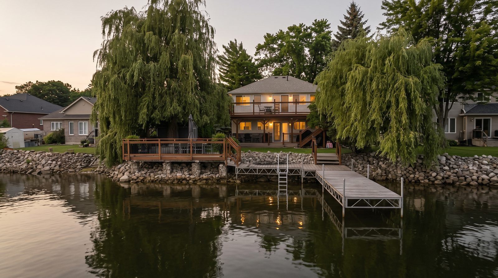

Georgian Bay communities
Waterfront villages, Victoria Harbour, Port McNicoll, Waubaushene, with a quieter pace, great value and easy access to the water.
Why Tay Township
Waterfront villages, Victoria Harbour, Port McNicoll, Waubaushene, with a quieter pace, great value and easy access to the water.
Tay Township suits people who want small-community living strung along the water: Victoria Harbour, Port McNicoll, Waubaushene and Waverley each have their own character, and the Trans-Canada Trail ties them together for walking, cycling and sledding. Commuters use Highway 400 access at Waubaushene, and waterfront buyers find some of the area's better value here, from tidy village homes to full waterfront on Hogg Bay and Sturgeon Bay.

On the market
Get every Tay Township listing the moment it hits the market, straight from Jonathan Wallace.
Get a free, no-obligation valuation from the agent who knows this market, plus a real marketing plan to sell it.
Price My Home